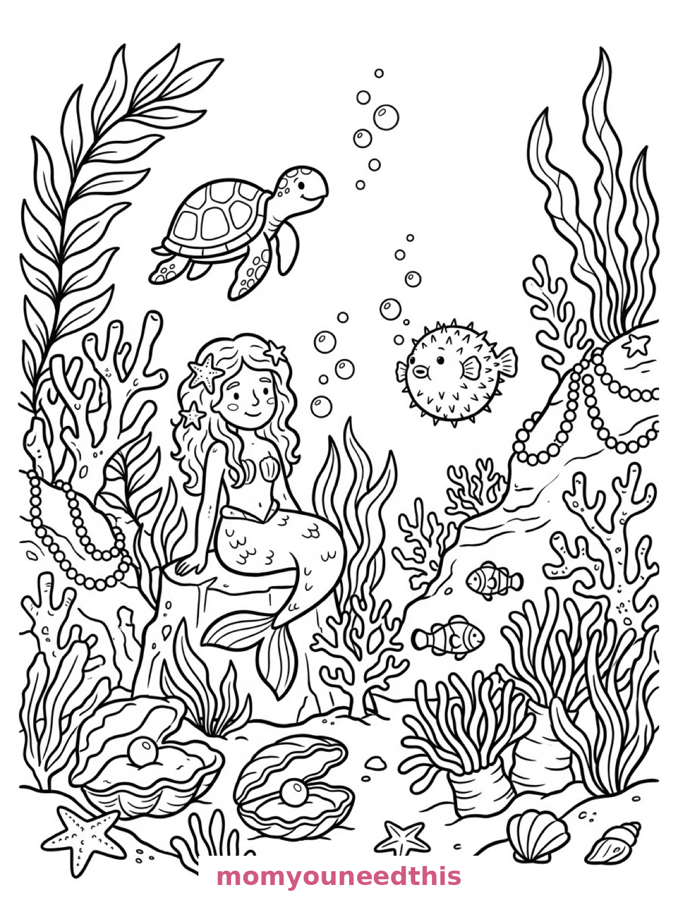
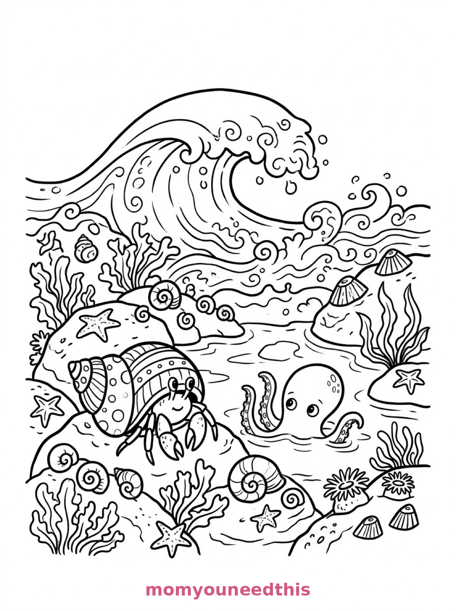

Free Sea Creatures Coloring Pages Coral Arch, Mermaid's Garden & Tide Pool Printables
These free sea creatures coloring pages gather the reef's friendliest residents — an octopus waving from a coral arch, a mermaid's garden full of swimmers, and a tide pool with a hermit crab. Download the set below, print at home on letter-size paper, and let the coloring fun begin. No signup needed.
Last updated: October 23, 2026
Quick Answer
Yes — this page has three free printable sea creatures coloring pages: sea creatures gathered around a coral arch with a waving octopus, a mermaid's underwater garden with a turtle and clownfish, and a tide pool with a hermit crab and a small octopus. Bold outlines and big spaces, made for little hands. Download, print on letter-size paper, and hand over the crayons — no signup, no cost.
At a Glance
- Ages: 3–8
- Pages: 3 free printables
- Format: Print at home, letter size
- Cost: Free, no signup
- Supplies: Crayons or markers
- Time: 10–20 minutes
🐙 Octopus on the Coral Arch Coloring Page

🎨 Download Your Free Coral Arch Coloring Page
Sea creatures gather around a coral arch: an octopus waves from the top, a seahorse and a jellyfish drift beside it, a crab waits on the sand below, and starfish and shells scatter across the seabed — bold outlines, big spaces, zero signup.
⬇️ Download Free Coral Arch Page 🖨️ Print Coral Arch Page🎁 Free printable for preschoolers & kids
🧜 The Mermaid's Garden Coloring Page

🎨 Download Your Free Mermaid's Garden Coloring Page
In a mermaid's underwater garden, a turtle, a pufferfish and a pair of clownfish swim among giant clams and sea anemones, with strings of pearls draped over the coral — bold outlines, big spaces, zero signup.
⬇️ Download Free Mermaid's Garden Page 🖨️ Print Mermaid's Garden Page🎁 Free printable for preschoolers & kids
🦀 Tide Pool Friends Coloring Page

🎨 Download Your Free Tide Pool Coloring Page
A tide pool at the water's edge holds a hermit crab in a patterned shell and a small octopus in the shallows, with periwinkles and limpets on the rocks and a wave curling behind them full of foam — bold outlines, big spaces, zero signup.
⬇️ Download Free Tide Pool Page 🖨️ Print Tide Pool Page🎁 Free printable for preschoolers & kids
More Coloring Pages
Tap any picture to open its theme page and download the free printable.


🦀 How To Use This Page
- Browse the three designs and pick the sea scene your child will love most.
- Tap download or print under that design — the file opens full-size, ready for letter-size paper.
- Print a couple of copies of the coral arch — it is a creature treasure hunt that never repeats.
- Color together with crayons or markers and count the creatures as you go.
🐚 Why Kids Love Sea Creatures Coloring Pages
Sea creatures are the most colorful cast in the animal world, and these pages assemble the whole cast in scenes instead of portraits. The same octopus waves from an arch on one page and peeks from a tide pool on another; the crab, the turtle and the clownfish all make their appearances. Kids color the scenes like they're populating an aquarium.
Every page also works as a gentle hunt: find the seahorse, spot the jellyfish, count the starfish. Sea creature pages hold attention longer than single-animal pages because there is always one more creature to find. That is what makes these the pages kids come back to the next day, hunting for the one shell or starfish they swear was not there yesterday — it was, of course, and finding it again is half the game and most of the charm.
🐙 Meet the Three Sea Scenes on This Page
The coral arch gathering. Sea creatures gather around a coral arch: an octopus waves from the top, a seahorse and a jellyfish drift beside it, a crab sits on the sand below, and starfish and shells scatter across the seabed. It is the friendliest page in the set — a group portrait of the whole reef.
The mermaid's garden. A mermaid tends her underwater garden where a turtle, a pufferfish and a pair of clownfish swim among giant clams and sea anemones, with strings of pearls draped over the coral. It is the most magical page in the set — pearls, clams and a mermaid, all waiting for jewel colors.
The tide pool. A tide pool at the water's edge holds a hermit crab in a patterned shell and a small octopus in the shallows, with periwinkles and limpets on the rocks and a wave curling behind them full of foam. It is the coziest page in the set — a whole tiny world in one rock pool, perfect for beach-day dreaming.
✏️ Sea Creature Coloring Tips
- One creature, one color family. Orange octopus, purple jellyfish, green turtle — giving each creature its own color makes the busy scenes read beautifully.
- Pattern the hermit crab's shell. Stripes, spots or swirls — the tide pool shell is the detail spot of the whole set.
- Leave the pearls white. White pearls against colored coral and water look like they shine.
- Foam stays white too. The curling wave on the tide pool page is drawn full of foam — color the water around it and the foam pops.
🦀 Coloring Pages for Different Ages
For ages 3 to 4, start with the coral arch. The octopus is one big, friendly shape, and the crab, starfish and shells are chunky extras to fill.
For ages 5 to 6, the tide pool is the sweet spot. The hermit crab and the little octopus are satisfying shapes, and the rocks and the wave add a real scene to build.
For ages 7 to 8, hand over the mermaid's garden. The clams, the pearls, the anemones and three different swimmers reward slow, detailed coloring — the finished page looks like an aquarium poster.
🐚 More Sea Fun After Coloring
Turn the set into a creature census: list every creature across the three pages (octopus twice — no double-counting arguments allowed, house rules apply). The coral arch page alone holds six different residents.
For the bigger ocean stories, visit the ocean animals coloring pages — reef turtle, dolphin and whale, giant squid. And the reef's boldest resident patrols the shark coloring pages.
🔗 More Free Printables You’ll Love
- Free Ocean Animals Coloring Pages A reef turtle, a dolphin and whale, and a giant squid to color.
- Free Shark Coloring Pages A kelp forest, a pirate ship and a coral canyon to color.
- Free Dolphin Coloring Pages Leaping dolphins, a mother and calf, and a beach-ball trick.
- All Free Coloring Pages Browse every free coloring page on the site, organized by theme.
❓ Sea Creatures Coloring Pages FAQ
Are these sea creatures coloring pages really free?
Yes — all three designs on this page are free original printables from MomYouNeedThis. Download them, print them at home, and color — no signup and no cost.
What ages are these coloring pages best for?
Kids ages 3 to 8 get the most from this set. The coral arch is the gentlest start for younger children, while the mermaid's garden and tide pool have the detail older kids enjoy.
How do I print a coloring page?
Tap the download button under the design you want, then print the file on regular letter-size paper. The print button opens the full-size page in a new tab if you prefer to print from there.
How is this page different from the ocean animals coloring pages?
This page zooms in on the reef's smaller residents — an octopus, a seahorse, a jellyfish, a hermit crab — in close-up scenes. The ocean animals coloring pages feature the big swimmers: a sea turtle, a whale, a dolphin and a giant squid. The two sets are made to pair up.
Can I make a sea creatures coloring book from these pages?
Yes — print all three designs, stack them in order, and staple along the left edge. Add a cover sheet with your child's name for a finished homemade sea creatures coloring book.